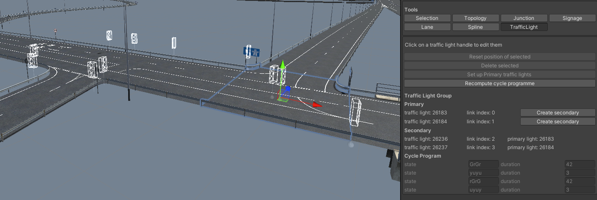

Implemented vehicle lights. Took the data from the simulation compressed it (emergency blinkers are the combined left & right blinker) and communicated it it from the server to the client
where it controlled a custom shader via the RBGA channels. The periodic light state of the indicator lights was assigned a phase based on the vehicle's internal id effectively randomising
the timings.
The task of interpolating position and speed between the sparse data of the simulation (every 0.2 seconds) has been done but the orientation of the vehicles followed the tangents of the splines.
This was a good 1st approximation. For vehicles dragging trailers a simplistic approach in which the midpoint of the rear axle(s) moved along the line connecting the the new position of the pivot of
the joint and the old position of the midpoint of the rear axle(s) between frames. However for the body of the vehicle a more involved turning circle based approach needed to be implemented in which
the wheels were taken to be paralell to the splines and the turning radius for each frame was determined by the intersection of the front and rear axles.
The novelty of MXT's use of SUMO was as a real time interactive tool. On account of having to interpolate paths splines between the sparse data the client saw a game state 0.5sec behind that
of the simulation. As a result occasionally a traffic vehicle would drive through the driver whihc is a jarring experience in VR completely breaking immersivity and realism. We built a system
to detect impending collisions and slow the offending vehciles along their paths computed by the SUMO simulation with it being able to take input at runtime. I created the automated test scenes
and implemented the necessary communication between the simulation run on the server and the interactive visualisation run by the client while my colleague implemented collision detection.
Road Editor tooling for adapting the traffic light system to allow signals to be duplicated and placed according to Highways regulations. Added vehicle types and created tooling
for ensuring realistic distributions. distribution generated by the road editor and represent by the client. Created tooling for the pathfinding and came up with some tricks
bespoke to the geometry of the road network to tune relative traffic density between parts of the road network.

Prototype Load Modeller
Creating realistic looking traffic on a fictional road network proved challenging in lieu of data on traffic density. For upcoming data based projects we prototyped
a traffic load modeller that could create SUMO traffic based on hourly transition rates of either roads between intersections or turns taken at intersections